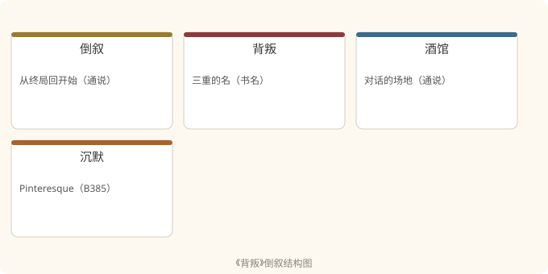

背叛
一、基本信息
| 作者 | 哈罗德·品特 |
|---|---|
| 成书/出版 | 1978年（Britannica B385：Betrayal (1978)——1983年自改电影） Harold Pinter — Encyclopaedia Britannica（百科全书） |
| 国别/地区 | 英国 |
| 时代 | 现当代 · 20世纪70年代末 |
| 体裁 | 戏剧 |
| 语言 | 英语 |

《背叛》倒叙结构图（主题·结构图）
二、创作背景
Britannica（B385）：Betrayal——'One of his later successes'——'adapted by Pinter as a 1983 film screenplay'。
Britannica（B385）：品特——'Pinteresque'——2005诺奖。
题材（通说待核）：倒叙结构——杰里与艾玛的婚外情七年九场。
三、内容脉络
（通说待核）倒叙：从1977的告别回至1968的开始。
（通说待核）'背叛'的多重：友、妻、自我。
四、主要人物表
| 人物 | 身份 | 说明 |
|---|---|---|
| 杰里/艾玛/罗伯特 | 三角 | （通说待核，B385未载） |
五、主题与艺术特点
- 倒叙的时间结构（通说待核）。
- '背叛'的复数（书名语境——通说待核）。
- 沉默与酒馆（B385 语系）。
六、影响与评论
- Britannica：'One of his later successes'（B385）。
Harold Pinter — Encyclopaedia Britannica（百科全书） - Britannica：2005诺奖（B385 交叉）。
Harold Pinter — Encyclopaedia Britannica（百科全书）
七、阅读建议
难点
- 倒叙的时间。
- '小对话'的信息量。
- 《背叛》中译本（人民文学等——通说待核）。
- 英文原版。
品特后期；与《生日晚会》对照。
八、待核实
- 杰里/艾玛/罗伯特人名核对（通说）。
- 1978年首演细节待核。
- 1983年电影细节待核（B385已载）。